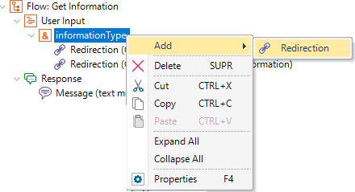

These are redirections stated for the User Input of the Flow of a Conversational instance. To add a User Input Redirection, right-click on a Variable under the User input node and select Add - > Redirection from the menu.  The Redirections are executed when the user enters data for the User input parameter. It is executed to the flow indicated under the Redirect to Flow property if the Condition property evaluates to TRUE. If none of the User Input Redirection nodes conditions evaluates to TRUE, you can send feedback to the user through the Chatbot Message of the Flow. The conditions can be expressed using the reference to a context variable or the reference to an entity (using the @entity syntax). AvailabilitySince GeneXus 16 upgrade 5 See also |
| Backlinks |
| Chatbot Entity |
| Chatbot User Input |
| Conversational Flows Editor |
| Redirect to Flow property |
| User Input Redirections Condition property |